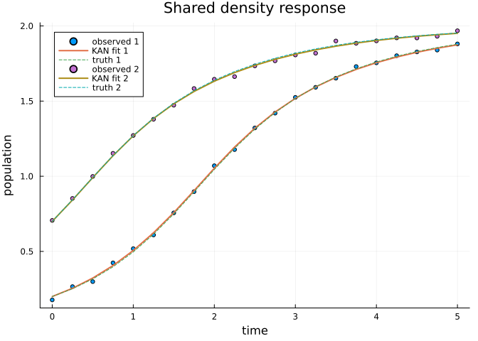
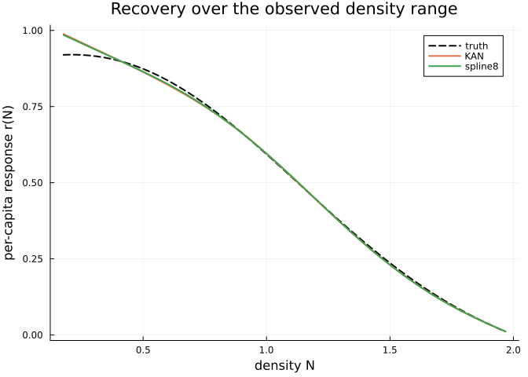
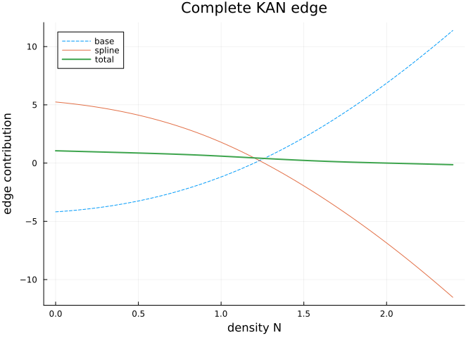
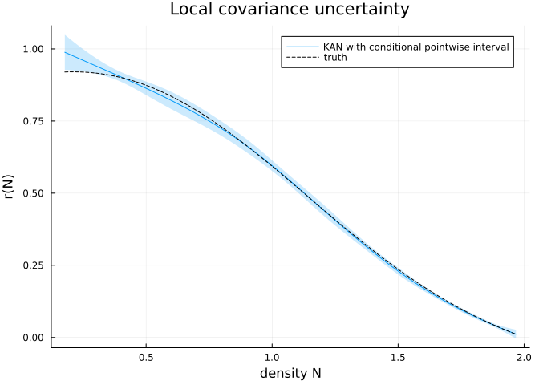
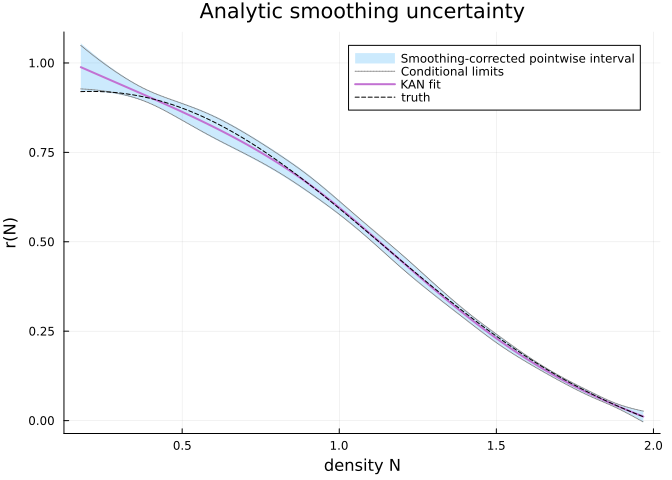
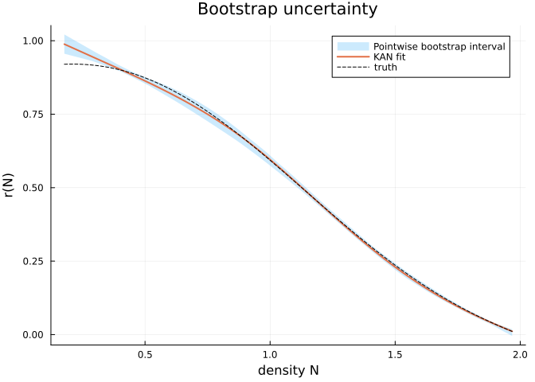
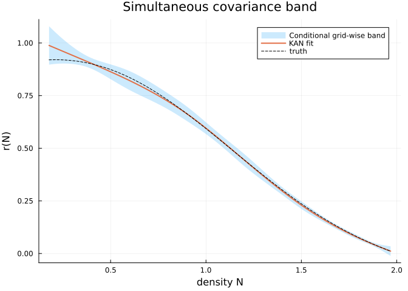
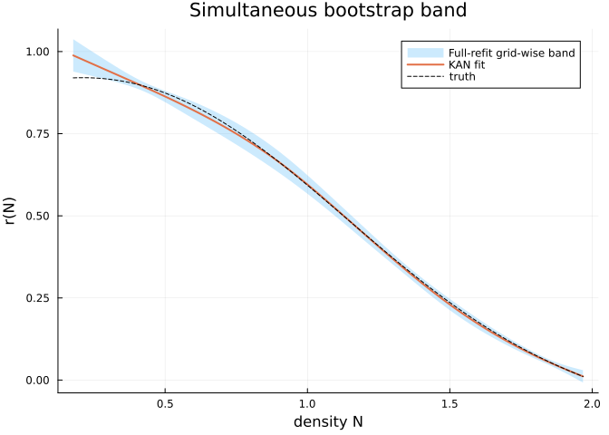

Kolmogorov-Arnold Networks as Functional Responses
A representation, not a different differential-equation solver
KANApproximator represents an unknown scalar function using learned univariate edge splines and residual/base functions. It fits into the ordinary PSM workflow: the dynamics call p.r(N), and an existing solver estimates the coefficients.
The first backend uses optional FluxKAN cubic layers with fixed grids. This example deliberately starts with a small, one-edge network; adding hidden layers is an architectural choice, not an automatic improvement. The comparative assessments include cases where conventional splines are more accurate or much cheaper.
using PartiallySpecifiedModels
using PartiallySpecifiedModels: solve
using OrdinaryDiffEq
using Lux, FluxKAN
using Random, LinearAlgebra, Statistics
using Plots
default(fmt=:png)
BLAS.set_num_threads(1)Two populations share an unknown density response
We observe two trajectories of the same model from different initial populations:
\[\frac{dN_j}{dt}=r(N_j)N_j,\qquad j=1,2.\]
The synthetic truth is nonlinear in density. The solver does not receive that formula:
rate_true(N) = 0.9 * (1-N/2) * (1+0.35sin(2N))
truth!(du, u, p, t) = (du .= rate_true.(u) .* u)
times = collect(0.0:0.25:5.0)
initial = [0.2, 0.7]
reference = OrdinaryDiffEq.solve(
ODEProblem(truth!, initial, (0.0, 5.0)), Tsit5();
saveat=times, abstol=1e-11, reltol=1e-11)
clean = permutedims(reduce(hcat, [reference(t) for t in times]))
observed = clean + 0.015randn(Random.Xoshiro(41), size(clean))
dynamics!(du, u, p, t) = (du .= p.r.(u) .* u)dynamics! (generic function with 1 method)Each population is an ODE state, but both use the same fitted function. No trajectory is fitted with its own response.
Construct and fit the KAN
model = LuxKANLinear(1, 1; grid_size=8, spline_order=3,
standalone_spline_scale=false)
kan = KANApproximator(:r, model;
input_domains=((0.0, 2.4),),
penalty=:edge_curvature,
nullspace_penalty=0.0,
rng_seed=42)
make_problem(a) = PSMProblem(dynamics!, initial, (0.0, 5.0), [a];
data_times=times, data_values=observed,
abstol=1e-8, reltol=1e-8)
problem = make_problem(kan)
algorithm = LAML(maxiters=40, jac=:forwarddiff)
fit = solve(problem, algorithm)
(parameters=nparams(kan), weighted_RSS=fit.data_loss,
smoothing=fit.smoothing_params, EDF=fit.edf,
stability=fit.convergence.converged,
stationarity=fit.convergence.stationarity,
smoothing_advanced=fit.convergence.smoothing_advanced)(parameters = 12, weighted_RSS = 0.0074724479801954865, smoothing = [0.00011010338330627534], EDF = 4.8934305643755, stability = true, stationarity = 0.00023966775158763555, smoothing_advanced = true)input_domains maps the physical density interval onto the first layer’s logical grid coordinates. The grids remain fixed throughout fitting. standalone_spline_scale=false avoids a separate spline multiplier and its redundant scaling.
The curvature penalty acts on the complete edge: base activation plus spline, including cross terms. This example leaves the affine component unpenalized, the API default. A small positive affine penalty is a statistical prior, not numerical jitter: when LAML scales it jointly with curvature, it changes the evidence normalization and can favor excessive smoothing.
Read the diagnostics separately: converged means the iteration stopped changing. It does not establish good fit quality. smoothing_advanced and stationarity describe smoothing selection, not global optimality.
trajectory_plot = plot(xlabel="time", ylabel="population", title="Shared density response")
for j in 1:2
scatter!(trajectory_plot, times, observed[:,j]; label="observed $j", ms=3)
plot!(trajectory_plot, times, fit.fitted_values[:,j]; label="KAN fit $j", lw=2)
plot!(trajectory_plot, times, clean[:,j]; label="truth $j", ls=:dash, lw=1)
end
trajectory_plot
Keep a conventional baseline
spline = BSplineApproximator(:r, (0.0, 2.4), 8; initial=N -> 0.5)
spline_fit = solve(make_problem(spline), algorithm)
density_grid = collect(range(max(0.0, minimum(observed)),
min(2.4, maximum(observed)), length=100))
plot(density_grid, rate_true.(density_grid); label="truth", c=:black, ls=:dash,
xlabel="density N", ylabel="per-capita response r(N)",
title="Recovery over the observed density range", lw=2)
plot!(density_grid, fit.unknown_functions[:r].(density_grid); label="KAN", lw=2)
plot!(density_grid, spline_fit.unknown_functions[:r].(density_grid); label="spline8", lw=2)
This is an illustrative fit, not a tuned model-family ranking. The benchmark studies use separate validation data, repeated seeds and held-out trajectories; the two curves here are not a substitute for that assessment.
Inspect the edge and where it is evaluated
edge = only(kan_edge_curves(kan, fit.parameters.r; npoints=100))
plot(edge.physical_x, edge.base; label="base", ls=:dash,
xlabel="density N", ylabel="edge contribution", title="Complete KAN edge")
plot!(edge.physical_x, edge.spline; label="spline")
plot!(edge.physical_x, edge.total; label="total", lw=2)
For this one-edge network, the total edge is also the complete response. In a composed network it contributes to a hidden activation instead. The components can offset one another; inspecting only the spline can misrepresent the fitted function.
exposure = kan_activation_diagnostics(kan, fit.parameters.r, vec(fit.fitted_values))
coverage = only(only(exposure.layers).coverage)
(outside_central_grid=coverage.outside_grid_fraction,
no_spline_basis=coverage.no_spline_basis_fraction,
occupied_intervals=coverage.interval_coverage)(outside_central_grid = 0.0, no_spline_basis = 0.0, occupied_intervals = 0.875)Leaving the central grid is not the same as losing spline support: cubic bases extend through padding. Marginal input coverage is not joint-trajectory support, and neither coverage nor an edge plot proves that a mechanistic decomposition is uniquely identified.
Conditional pointwise uncertainty
[!WARNING]
These nominal intervals are not automatically calibrated. The fresh-data study of this nonlinear truth and free-affine KAN procedure found average in-range coverage of about 92% for nominal 95% covariance intervals and 77% for percentile bootstrap intervals. The logistic control was close to nominal. The examples below demonstrate the APIs, not a coverage guarantee. The earlier jointly penalized affine configuration performed worse; the prior investigation explains why this example now uses the default zero affine penalty.
LAML supplies a local parameter covariance. confidence_band projects it through the fixed-grid KAN’s parameter gradient using ForwardDiff:
conditional = confidence_band(fit, problem;
uf_points=Dict(:r => density_grid))[:r]
plot(conditional.points[:,1], conditional.fitted;
ribbon=(conditional.fitted-conditional.lower,
conditional.upper-conditional.fitted),
label="KAN with conditional pointwise interval", fillalpha=0.2,
xlabel="density N", ylabel="r(N)", title="Local covariance uncertainty")
plot!(density_grid, rate_true.(density_grid); label="truth", c=:black, ls=:dash)
These are local, pointwise delta-method intervals, conditional on the selected smoothing, architecture, fixed grids and fitted solution. They do not include model selection, prove identifiability, automatically correct smoothing bias, or guarantee coverage. A multivariate KAN needs explicit query points rather than an invented rectangular grid.
Without uf_points, a unary KAN with an input domain returns a .grid; with explicit points, it returns an owned .points matrix, one sample per row. Here we deliberately evaluate only the observed density range.
Analytic smoothing-uncertainty correction
For this Gaussian LAML fit, unconditional=true adds both the coefficient-mean and covariance-root terms of Wood, Pya and Saefken’s smoothing-uncertainty correction:
correction = smoothing_covariance_correction(fit, problem)
adjusted = confidence_band(fit, problem; unconditional=true,
uf_points=Dict(:r => density_grid))[:r]
plot(density_grid, adjusted.lower; fillrange=adjusted.upper,
label="Smoothing-corrected pointwise interval", fillalpha=0.2, linealpha=0,
xlabel="density N", ylabel="r(N)", title="Analytic smoothing uncertainty")
plot!(density_grid, conditional.lower; label="Conditional limits", c=:grey, ls=:dot)
plot!(density_grid, conditional.upper; label=false, c=:grey, ls=:dot)
plot!(density_grid, adjusted.fitted; label="KAN fit", lw=2)
plot!(density_grid, rate_true.(density_grid); label="truth", c=:black, ls=:dash)
(log_smoothing_variance=only(correction.rho_covariance),
mean_SE_ratio=mean(adjusted.se ./ conditional.se),
mean_correction_trace=tr(correction.mean_correction),
root_correction_trace=tr(correction.root_correction),
coefficient_step=norm(correction.coefficient_step))(log_smoothing_variance = 0.6161528855350749, mean_SE_ratio = 1.0583867175037753, mean_correction_trace = 868.9662674825697, root_correction_trace = 69007.63854845548, coefficient_step = 0.001478571428793333)The helper’s .covariance is already scaled. Its profiled-REML curvature includes the response of the coefficient optimum and profiled scale, but freezes the final data Jacobian and weights. The coefficient dispersion is held fixed when differentiating the covariance root. This is a local Gaussian working-model approximation, not full integration over dispersion, architecture, grids, or a nonlinear ODE likelihood. It leaves the fitted curve unchanged and does not remove smoothing bias.
There is no silent fallback: unidentified/indefinite smoothing curvature raises an error. A covariance-only rho_regularization must be explicit; the default is zero. A fixed-lambda refit instead needs a supplied selection-stage rho_covariance. Successful calculation is not a stationarity, identifiability or coverage guarantee.
Pointwise bootstrap uncertainty
bands = bootstrap(fit, problem, algorithm;
nboot=30, uf_points=Dict(:r => density_grid), rng=Random.Xoshiro(141))
x_band = bands.uf_points[:r][:,1]
band = bands.ci_uf[:r]
point = fit.unknown_functions[:r].(x_band)
plot(x_band, band.lower; fillrange=band.upper,
label="Pointwise bootstrap interval", fillalpha=0.2, linealpha=0,
xlabel="density N", ylabel="r(N)", title="Bootstrap uncertainty")
plot!(x_band, point; label="KAN fit", lw=2)
plot!(x_band, rate_true.(x_band); label="truth", c=:black, ls=:dash)
Thirty replicates keep this tutorial short; use a larger declared replication budget for scientific intervals. These are pointwise intervals, not a simultaneous band. Resampling and refitting do not establish correct coverage under model misspecification, and thinly observed densities remain weakly identified. The architecture and grids stay fixed across replicates. LAML reselects smoothing in each refit; a fixed-penalty Adam bootstrap does not. Both keep the declared initialization rather than sampling network initializations.
(successful_fits=bands.n_success,
minimum_usable_replicates=minimum(bands.uf_success[:r]))(successful_fits = 30, minimum_usable_replicates = 30)uf_success counts finite evaluations at each point, separately from successful trajectory fits. Fewer than three usable evaluations yields NaN interval endpoints and a warning, not an apparent zero-width interval.
Simultaneous bands have a different target
A pointwise interval concerns one density. A simultaneous band concerns the entire selected density grid in a dataset. Averaging pointwise coverage across densities does not measure that event.
The conditional covariance version calibrates the maximum standardized Gaussian/delta deviation:
sim_conditional = confidence_band(fit, problem;
uf_points=Dict(:r => density_grid), interval=:simultaneous,
nsim=10_000, rng=Random.Xoshiro(241))[:r]
plot(density_grid, sim_conditional.lower; fillrange=sim_conditional.upper,
label="Conditional grid-wise band", fillalpha=0.2, linealpha=0,
xlabel="density N", ylabel="r(N)", title="Simultaneous covariance band")
plot!(density_grid, sim_conditional.fitted; label="KAN fit", lw=2)
plot!(density_grid, rate_true.(density_grid); label="truth", c=:black, ls=:dash)
The bootstrap version reuses the complete paired function draws already computed above. It uses maximum deviations around the original fitted curve, not separate percentile endpoints at each point:
sim_bootstrap = confidence_band(bands, fit, problem;
interval=:simultaneous)[:r]
plot(density_grid, sim_bootstrap.lower; fillrange=sim_bootstrap.upper,
label="Full-refit grid-wise band", fillalpha=0.2, linealpha=0,
xlabel="density N", ylabel="r(N)", title="Simultaneous bootstrap band")
plot!(density_grid, sim_bootstrap.fitted; label="KAN fit", lw=2)
plot!(density_grid, rate_true.(density_grid); label="truth", c=:black, ls=:dash)
(covariance_critical=sim_conditional.critical,
bootstrap_critical=sim_bootstrap.critical,
scope=sim_bootstrap.scope, bootstrap_draws=sim_bootstrap.n_draws)(covariance_critical = 2.94246641620836, bootstrap_critical = 2.722266279037937, scope = :function_grid, bootstrap_draws = 30)These bands are per function and per finite grid, not joint across different unknown functions or guaranteed over a continuum. Smoothing uncertainty is a separate issue: the Gaussian calculation above still conditions on selected smoothing, whereas this bootstrap refits smoothing in every replicate. To use the analytic correction for a simultaneous band, select both options:
sim_adjusted = confidence_band(fit, problem; unconditional=true,
interval=:simultaneous, uf_points=Dict(:r => density_grid),
nsim=10_000, rng=Random.Xoshiro(241))[:r]
(conditional_critical=sim_conditional.critical,
corrected_critical=sim_adjusted.critical,
conditioning=sim_adjusted.conditioning)(conditional_critical = 2.94246641620836, corrected_critical = 2.9514919838556617, conditioning = :smoothing_corrected)Do not add the analytic correction to the full-refit bootstrap again. Thirty bootstrap draws remain illustrative, especially for a maximum-deviation tail.
The simultaneous-band assessment reports whole-grid and pointwise coverage separately and checks grid refinement without refitting the retained models.
More inputs and composition
A two-input response can use a composed network:
layer(ni, no) = LuxKANLinear(ni, no; grid_size=3,
spline_order=3, standalone_spline_scale=false)
interaction = KANApproximator(:g, Lux.Chain(layer(2, 3), layer(3, 1));
input_domains=((0.0, 3.0), (0.0, 2.5)),
penalty=:edge_curvature, nullspace_penalty=0.0, rng_seed=42)
g_initial = build_evaluator(interaction, initial_params(interaction))
g_initial(1.0, 0.5)0.0069896576947594425In predator-prey dynamics, call this function as p.g(N,P). A single two-input KAN layer is additive; composition is needed for general interactions. A trajectory is a curve through state space, not a filled surface. Evaluate and report multivariate recovery where the data go.
For a fitted two-input problem, the same uncertainty APIs accept an n_points by two matrix. This template uses a chosen physical state path, not a full rectangular surface:
points = hcat(N_path, P_path)
conditional = confidence_band(interaction_fit, interaction_problem;
uf_points=Dict(:g => points))
resampled = bootstrap(interaction_fit, interaction_problem, algorithm;
nboot=200, uf_points=Dict(:g => points))The constructed interaction above has not been fitted, so no uncertainty claim is made for it here. Query coordinates can also be supplied for tensor splines. For single-index and transformed-covariate approximators, explicit points describe the full response (including inner-parameter uncertainty), whereas the default grid describes only the outer curve. The fresh study’s scalar composed-KAN screen had poor fitting diagnostics and unstable interval widths under its declared budget. A larger architecture therefore needs its own fitting and uncertainty assessment; composition is not an automatic improvement.
The detailed multitrajectory, near-trajectory and reaction-diffusion assessments show why architecture, optimizer, support and computational cost should be considered together.